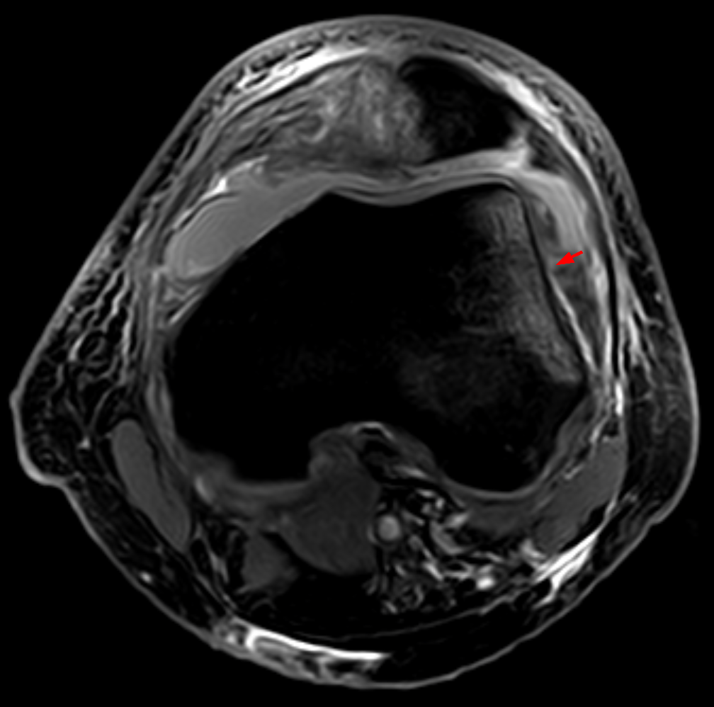

Ficha del catálogo
Luxación transitoria de la rótula
- Sistema
- Óseo
- Modalidad
- RM
- Región
- Rodilla
- Dificultad
- Intermedio
La luxación lateral transitoria de la rótula es frecuente en adolescentes y adultos jóvenes, con frecuencia durante un giro con el pie fijo y sin golpe directo. La rótula se reduce sola antes de llegar a urgencias, de modo que las radiografías pueden parecer normales y el diagnóstico se apoya en el patrón de lesión que deja la resonancia. Ese patrón es tan característico que permite afirmar el mecanismo aunque el paciente no lo recuerde. Existen factores predisponentes anatómicos que conviene describir porque condicionan el riesgo de recidiva.
Técnica
Resonancia de rodilla con secuencias sensibles al líquido y supresión grasa en los tres planos. El plano axial a la altura de la tróclea es el más informativo.
Qué observar
- Edema óseo en la faceta medial de la rótula
- Edema óseo en la cara anterolateral del cóndilo femoral externo
- Rotura o despegamiento del ligamento femoropatelar medial
- Derrame articular abundante y cuerpos libres osteocondrales
- Tróclea femoral poco profunda o plana como factor predisponente
- Posición alta de la rótula y lateralización del tendón rotuliano
Hallazgos
Contusiones óseas en la faceta rotuliana medial y en el cóndilo femoral lateral, con lesión del estabilizador medial y derrame articular.
Perlas
La pareja de contusiones en la rótula medial y en el cóndilo lateral es prácticamente diagnóstica del episodio de luxación y reducción espontánea. Conviene buscar además fragmentos osteocondrales libres, que cambian el manejo porque pueden requerir extracción o fijación.
Diagnóstico diferencial
- Rotura del ligamento cruzado anterior
- Contusiones en el cóndilo lateral posterior y en la meseta tibial posterolateral.
- Fractura osteocondral aislada
- Defecto condral sin lesión del estabilizador medial ni edema en la faceta medial.
- Síndrome de dolor femoropatelar
- Dolor crónico sin edema óseo agudo ni lesión ligamentaria.
Simuladores
- Edema subcondral degenerativo
- Artefacto de supresión grasa incompleta
- Variantes de osificación de la rótula en el adolescente
Por modalidad
- RM
- Método de elección para el patrón de contusiones y el ligamento medial
- RX
- Detecta fragmentos osteocondrales y mide la altura rotuliana
- TC
- Cuantifica la displasia troclear y la posición del tendón rotuliano
Protocolo
Resonancia de rodilla con secuencias sensibles al líquido en los tres planos. Radiografía axial y lateral para valorar altura rotuliana y morfología troclear.
Clasificación
Errores frecuentes
- Informar como normal una rodilla con derrame sin buscar el patrón de contusiones
- No describir los factores anatómicos que favorecen la recidiva
- Pasar por alto un fragmento osteocondral libre en el receso articular

rodilla rotula luxacion transitoria contusion osea ligamento femoropatelar medial displasia troclear resonancia